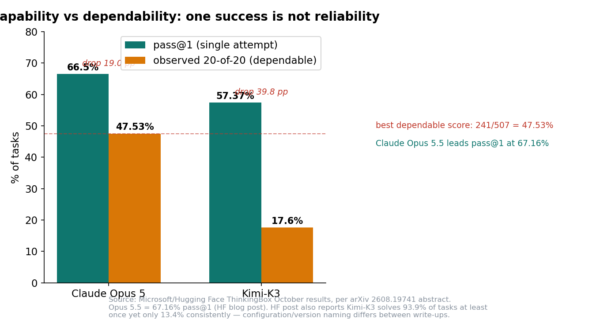
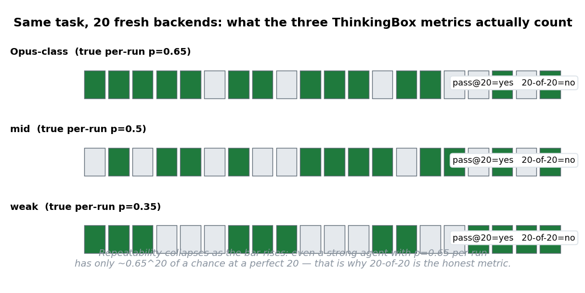
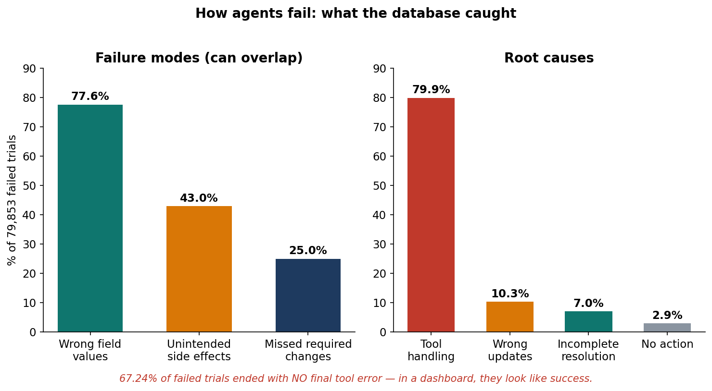
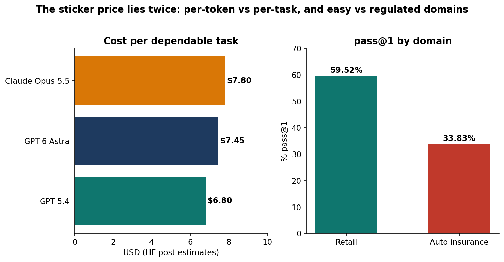

Your coding agent just demoed beautifully. It refactored the module, updated the tests, and wrote a tidy summary. One problem: the demo was one run. This week, Microsoft researchers and Hugging Face published the October results of ThinkingBox, a benchmark that ran 507 real business-workflow tasks 20 times each — and found that the best agents in the world pass all 20 attempts on barely half of them.
The headline numbers: 121,680 trials. 79,853 failures. Claude Opus 5.5 — the leader — passes 20-of-20 on just 241 of 507 tasks (47.53%). And 67.24% of the failed trials ended with no tool error at all. In your dashboard, they looked like success.
The benchmark's thesis, per the Hugging Face write-up, fits on one line: "A trajectory is a claim. Database state is the evidence." ThinkingBox grades what the agent actually changed in a backend database — not what it said it changed. This post is about why that one design choice makes it the most practical agent evaluation of the year.
ELI5: grade the homework, not the excuse
Imagine two students. The first hands in perfect homework. The second hands in a beautiful note explaining why the homework is done. Most agent benchmarks grade something close to the second option: they read the agent's chat transcript and ask "does this look right?" or check "did it call the expected tools?"
Those are proxies, and proxies lie. An agent can say "I've updated your reservation" after writing the wrong date. It can call the correct refund tool with the wrong amount. It can touch a second customer record it was never supposed to open.
ThinkingBox ignores the transcript entirely. Before the agent starts, it snapshots a backend database. The agent works through its tools. After the agent stops, deterministic judges diff the final database against a required end state — and check for forbidden side effects: rows that were supposed to stay untouched. The transcript never enters the verdict. The paper's title (arXiv 2608.19741) is the whole argument: "One Success Isn't Reliability."

How it works: 507 tasks, 20 fresh backends each
The setup is deliberately simple to reason about:
- 507 business workflows across retail, travel and hospitality, auto insurance, neobank IT, and consulting IT/HR — modifying orders, filing insurance claims, rebooking travel, resolving IT tickets.
- Tools exposed as MCP servers, so any agent speaking the Model Context Protocol can plug in.
- Every run gets an isolated, freshly reset backend. Attempt 7 cannot be contaminated by attempt 6.
- Deterministic judges compare the terminal database against the required end state and scan for side effects. No LLM grader, no vibes.
-
Each task is repeated 20 times, reported three ways:
-
pass@1 — share of single attempts that succeed. First-try quality.
- pass@20 — tasks solved at least once in 20 tries. The capability ceiling: what the model can do on a good day.
- observed 20-of-20 — tasks that pass every recorded attempt. Dependability: what you can promise a customer.
Reporting all three is the real contribution. Most leaderboards report something like pass@1 and let you imagine the rest. ThinkingBox exposes the gap between "can do" and "reliably does" — and the gap is where the failures live.

SOTA: what 121,680 trials say about today's models
The reliability collapse is real and steep. Claude Opus 5 falls from 66.50% pass@1 to 47.53% 20-of-20 as the bar moves from one attempt to twenty. Kimi-K3 falls from 57.37% to 17.60%. The Hugging Face post adds the most damning version of the Kimi number: the model solves 93.89% of tasks at least once but is dependable on only 13.41%. A model that can eventually solve nearly everything is dependable on a small fraction. (Exact decimals differ slightly between the paper abstract and the HF post — read the paper's tables before quoting a specific cell; the direction is identical everywhere.)
The failure anatomy is actionable. Among the 79,853 failed trials: roughly 77.6% had wrong field values, 43% created unintended side effects, and 25% missed required changes — these overlap, since one trial can fail several ways. By root cause: 79.9% traced to tool handling, 10.3% to wrong updates, 7.0% to incomplete resolution, 2.9% to no action at all. Tool handling dominates — the agent picked the wrong tool, misread the schema, or fumbled the parameters. If you build agents, this is your biggest bucket, and it says the tool surface design matters as much as the model.

The silent failures are the scary class. 67.24% of failed attempts ended with no final tool error. The agent didn't crash, didn't loop, didn't hit a rate limit. It produced a confident summary after valid state-changing actions. Your production monitoring — the kind that watches for errors and timeouts — would have marked these as success. You find out later: from the customer, the auditor, or the reconciliation job.
Domain matters enormously. Retail averages 59.52% pass@1; auto insurance averages 33.83%. Insurance workflows carry more policy rules and more fields that must be exactly right — which is precisely the kind of task a business will actually automate.
Sticker price is not the price. The post estimates cost per dependable task: about $6.80 for GPT-5.4, $7.45 for GPT-6 Astra, $7.80 for Claude Opus 5.5. A cheaper model that needs more attempts — or more human cleanup — costs more per finished task. Budget for verification, because per-token price and per-reliable-outcome price are different things.

Honest caveats: the 507 workflows are well-designed but synthetic stand-ins for your systems; all results come from one agent harness, so treat model rankings as a snapshot, not a universal ordering; and the judges are only as good as the end states someone wrote — sample failures by hand before trusting any aggregate. The framework is MIT-licensed on GitHub (microsoft/thinkingbox) with the dataset (microsoft/ThinkingBox-Bench) on Hugging Face — the authors want you to steal the method, not just read the leaderboard.
The production reality check
- Measure observed all-runs-pass, not pass@1. If a workflow must succeed every time — refunds, bookings, claim payouts — the benchmark says pass@1 systematically overstates what you can promise. Run each eval task 10–20 times and report the full distribution.
- Grade the database, not the chat. Write the required end state first: exact rows and fields that must change, rows that must not. Snapshot before and after, diff the data, assert unrelated records are unchanged. A minimal version needs no ThinkingBox — just a fixture, a diff, and discipline.
- Fix tool handling first. At 79.9% of root causes, the tool surface — schemas, descriptions, parameter naming — is the highest-leverage fix in the stack. It echoes the harness lesson from earlier in this series: the harness, not the model, decides what the agent can do.
- Instrument for silent wrong writes. Error-rate dashboards miss 67% of failures. Reconciliation checks — deterministic judges on final state — belong in production monitoring for any agent with write access.
- Price per verified task, not per token. The $6.80/$7.45/$7.80 figures make the point: a cheaper model's invoice can be larger once retries and cleanup are counted. Model your eval harness cost with the verification loop included.
Takeaways
- One success is not reliability. Capability (pass@20: 93.9% for Kimi-K3) and dependability (20-of-20: 13.4%) are different numbers, and the second is the one your customers feel.
- The trajectory is a claim; the database is the evidence. Grading transcripts or tool-call lists is a proxy; diffing final state against a required end state removes the proxy.
- Two-thirds of failures are silent. No crash, no error, no timeout — just a wrong write wearing a confident summary. Only state checks catch them.
- Tool design beats model choice for reliability. 79.9% of root causes are tool handling. Sharpen the tool surface before swapping the model.
- This is a template, not just a leaderboard. The environment, tasks, and judges are open — steal the method for your own workflows, whatever your domain.
All figures are from the Microsoft/Hugging Face ThinkingBox October results as summarized in the arXiv paper (2608.19741) and the Hugging Face write-up, via the October 2026 coverage. Minor decimals differ between the paper abstract and the blog post (run configuration/version naming) — direction and magnitudes are consistent across sources.